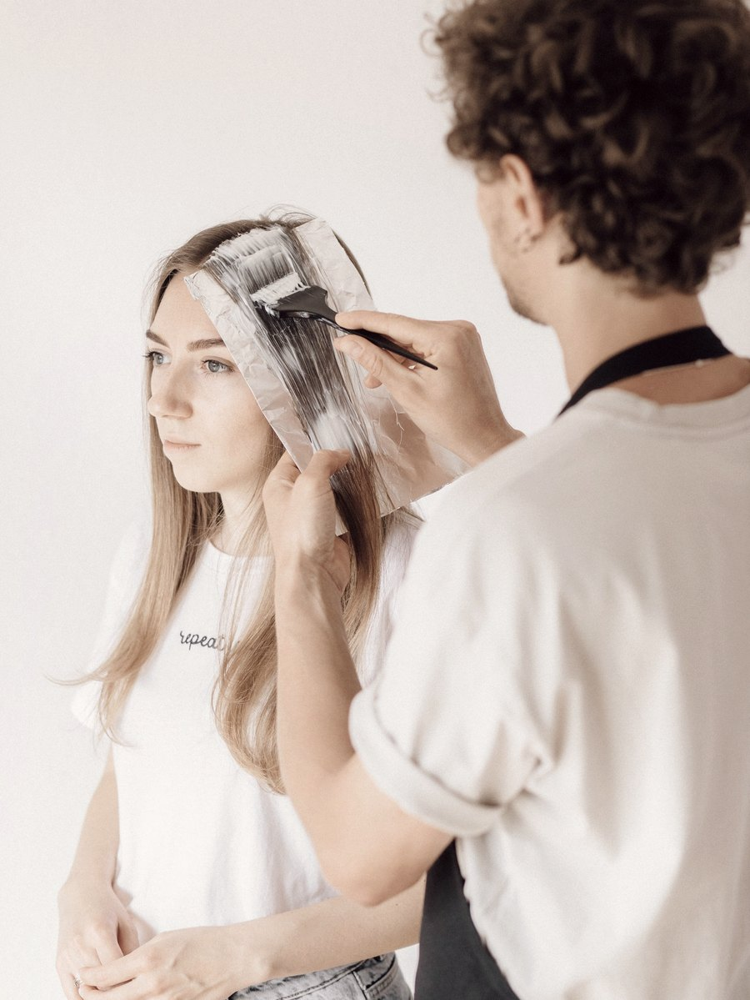
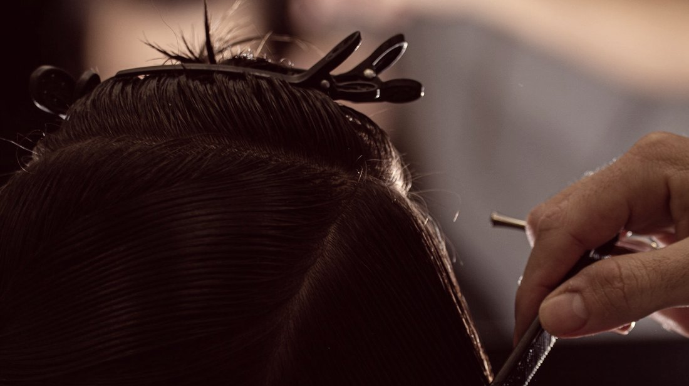
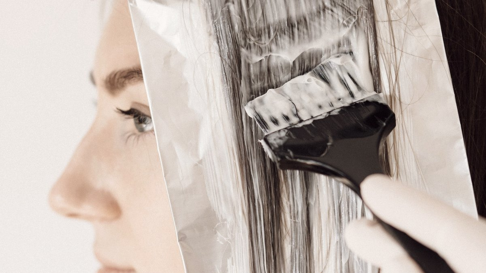

Av. Djalma Batista · Pátio Gourmet · DMALL
O salão inteiro é feito de portas de verdade — recolhidas, restauradas e penduradas na parede. Elas não são decoração: são a explicação do nome.

AntesQuando uma porta se abre, começa uma nova etapa. Você passa por ela com sua beleza natural e sai ainda mais radiante.Gabriella Abreu · fundadora
O que fazemos
Assinado por Thompson Romero
É o serviço que leva o nome de um profissional específico da casa. Morena iluminada, loiro completo e correção de cor, com o tempo de cadeira combinado antes.
Cor
O cooper tone que aparece com frequência no feed. Cor quente, aplicada com o cuidado de quem precisa mantê-la viva depois da terceira lavagem.
Corte
O corte médio mais pedido da casa, entregue já finalizado — porque quase ninguém quer ver o resultado só no dia seguinte.
Química
Progressiva, botox capilar e reconstrução, com avaliação do fio antes de escolher o produto.
Mãos e pés
Manicure, pedicure e alongamento. A frente que segura a agenda do sábado inteiro.
Pele e olhar
Limpeza de pele, design de sobrancelhas, maquiagem social e depilação — o pacote de quem vai a um evento e resolve tudo numa visita.
Porta aberta
A casa é parceira do instituto Que a Inclusão Vire Rotina, e mantém corte de cabelo gratuito para pessoas com deficiência — em qualquer dia da semana, sem data marcada nem campanha.
Não é ação de calendário. É uma cadeira que está sempre disponível.

Cinco anos depois
O salão nasceu de uma matéria sobre um espaço de base reciclável que a fundadora leu por acaso. As portas vieram daí — e ficaram.

Contato
Mande uma foto do seu cabelo hoje e diga aonde quer chegar. A gente responde com o serviço, o tempo de cadeira e o horário livre mais próximo.